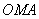
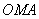
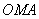

6.6.1*. Окружность
Пусть  – текущая точка
окружности с центром в начале координат и радиусом
– текущая точка
окружности с центром в начале координат и радиусом  .
В качестве параметра
.
В качестве параметра  выберем угол, который
составляет радиус-вектор точки с осью
выберем угол, который
составляет радиус-вектор точки с осью  . Из треугольника :
. Из треугольника :
– текущая точка
окружности с центром в начале координат и радиусом .
В качестве параметра выберем угол, который
составляет радиус-вектор точки с осью . Из треугольника :
Параметрическое
уравнение окружности
–
параметрические уравнения окружности.
Исключим из параметрических уравнений параметр . Для этого возведём эти уравнения в
квадрат и сложим их:
. Для этого возведём эти уравнения в
квадрат и сложим их:.
Таким образом, получено уравнение окружности в декартовых
координатах.